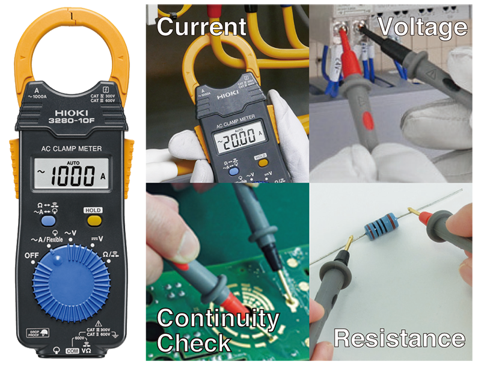
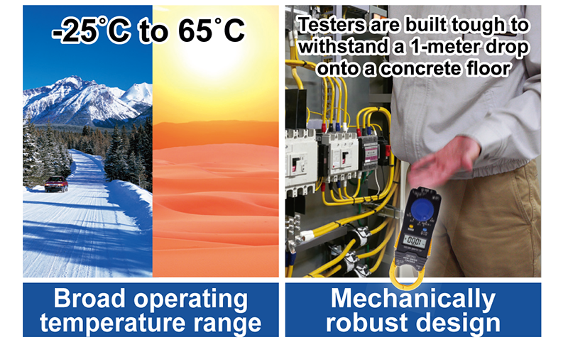

HIOKI
AC 클램프미터 3280-10F
모델 3280-10F
계측기
일반
86,900원
주문 후 2~3일 이내 발송 (배송비 별도)
상세정보
스펙(제원표)
구매평
Q&A
제품 소개
HIOKI 3280-10F는 두께 16mm의 카드 사이즈 초슬림 AC 클램프미터입니다. 지갑처럼 휴대하며 전류·전압·저항을 간편하게 점검할 수 있어 현장 상비용으로 적합합니다.
주요 특징
- 두께 16mm의 카드형 초슬림 바디, 최대 AC 1000A 측정
- DMM 기능 겸용: DC/AC 전압, 저항 측정
- 드롭프루프 설계 (콘크리트 1m 낙하 시험 통과)
- 코인형 리튬전지로 연속 약 120시간 사용
본 정보는 제조사(HIOKI) 공식 자료를 기준으로 제공됩니다.
제조사 제공 상세 이미지

